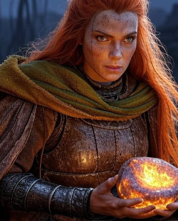
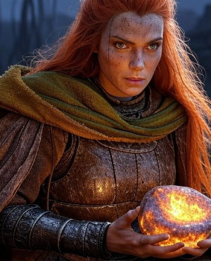

The Penultimate Guardian
 

Profile
Name: Elyra
Role: Penultimate Guardian (Deceased, Spectral Guide)
Gender: Female
Age: Died at 44 (16 years ago)
Appearance
Tall and broad once, now a spectral echo of warrior’s poise—her fiery reddish-orange hair flows ethereally, silver-streaked, glowing with Essence. Hazel-gold eyes pierce the dark, clad in ghostly armor torn at the chest, her cloak trailing like a storm’s memory.
Personality
Loving yet stern—Elyra’s strength shines through regret and pride. Fierce in duty, tender with Aria, her spectral voice urges with sorrow and hope, a guiding flame unyielding beyond death.
Abilities
Spectral Influence: Enhances Heartstone (+10 Essence regen)—her essence pulses warm, amplifying Aria’s power.
Guardian Mastery (Past): Wielded Melee Strike, Ranged Shot, Gauntlet Gust—visions echo her skill, guiding Aria.
Background
Born a Guardian, Elyra raised Aria on tales of ancient glory, her fiery hair a lineage mark. She led the last Guardians against Umbraeth’s rift, sealing it with her blood 16 years ago—her sacrifice haunts Aria, her essence lingering as a spectral guide.
Role
Elyra’s sacrifice drives Aria’s quest—her visions and Heartstone link past to present, mentoring her daughter to banish Umbraeth and find peace beyond her fall.